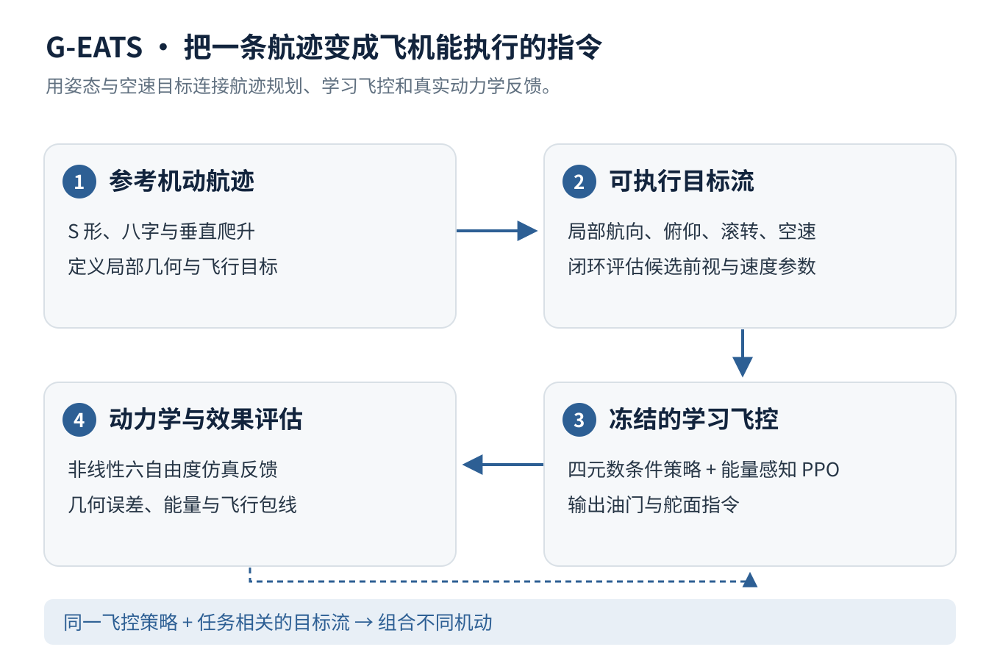
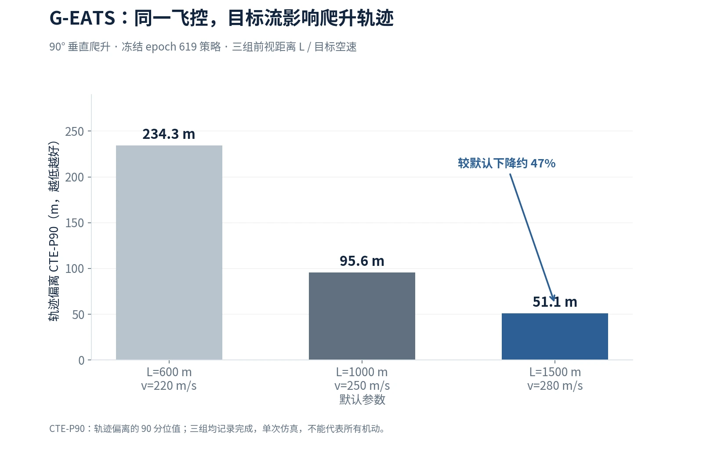

G-EATS：目标条件强化学习与固定翼高机动控制
让固定翼飞机沿复杂航迹飞行，需要同时处理姿态、空速、升力方向与能量。我设计 G-EATS，用目标条件强化学习学会直接舵面控制，再将整段航迹转换成飞机可执行的姿态与空速目标流。
- 低层采用四元数条件飞控与能量感知 PPO；规划层评估候选目标流的前视距离与空速，在冻结飞控策略的条件下组合不同机动。
- 用轨迹偏离、速度切向、机头与机翼平面误差，以及能量和飞行包线指标共同评估执行质量。
- 在所示 90° 爬升参数对比中，冻结同一 epoch 619 策略，仅调整目标流后，CTE-P90 由默认的 95.6 m 降至 51.1 m，约下降 47%（该任务的单次仿真记录）。

